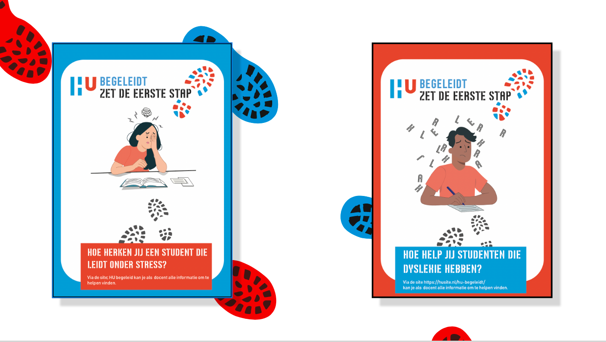
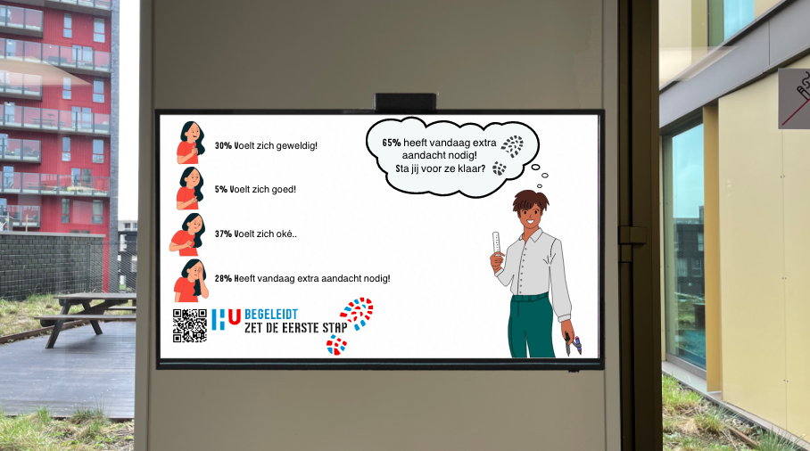
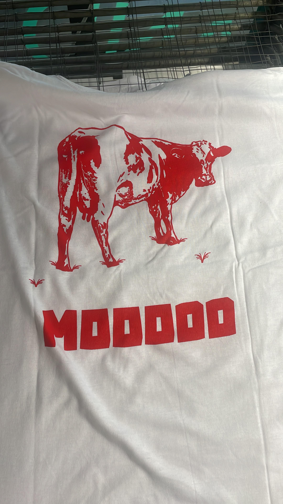
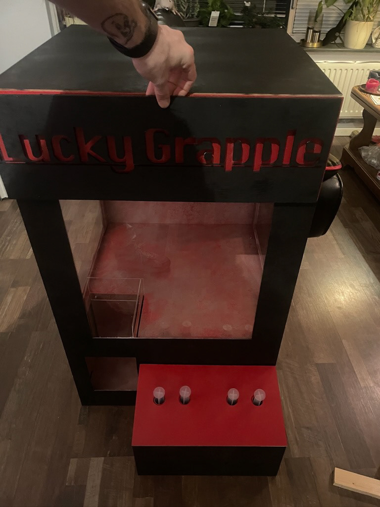
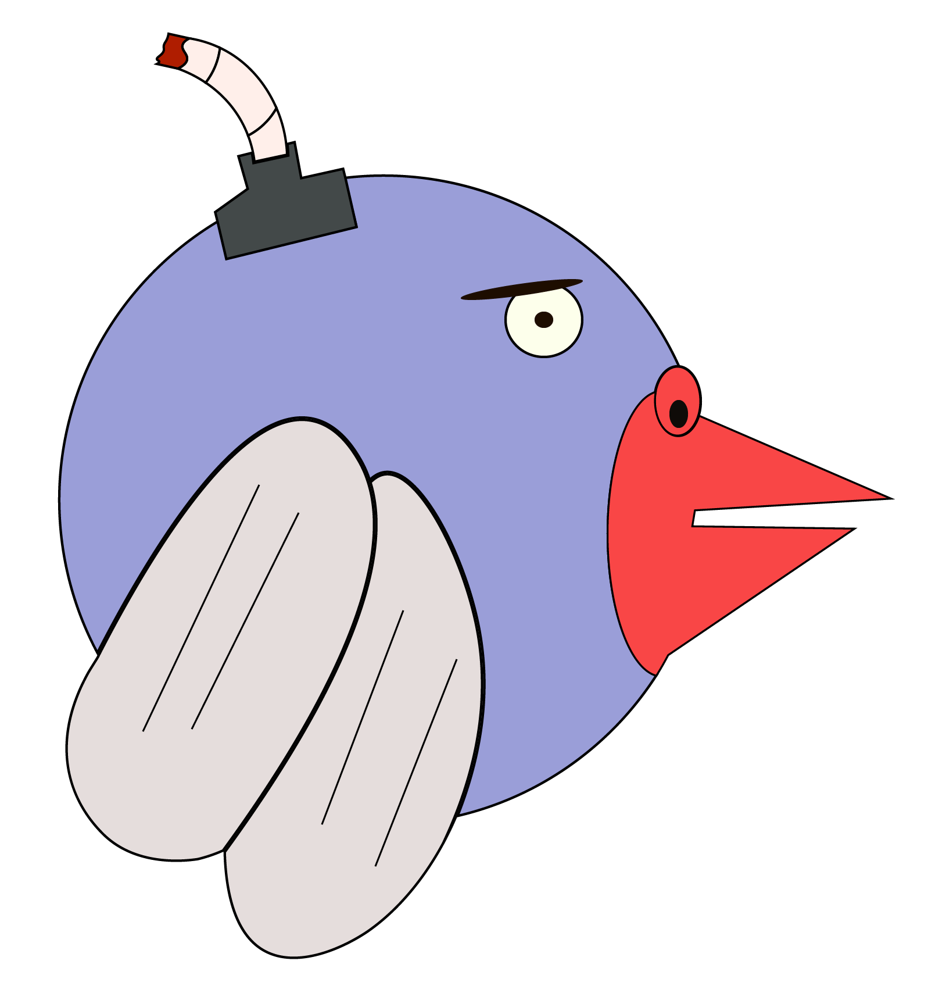
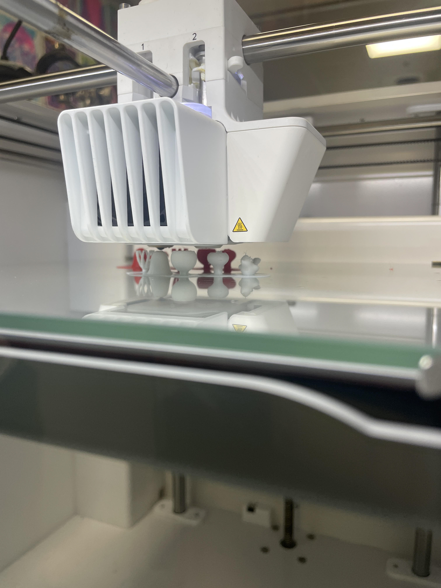

Generation Plastic Soup
An interactive experience tackling the EU plastic crisis.
[ VIEW DOSSIER ]I am Casper de Bruyn, a CMD student at Hogeschool Utrecht and a multi-disciplinary maker based in Delft. Born in '97, I bridge the gap between high-precision woodworking and digital AI innovation.
Whether I'm constructing a multiplex wall unit inspired by Poul Cadovius or managing my own Linux AI Homelab, I thrive on the intersection of physical craftsmanship and technical exploration. From immersive installations to custom smart-home integrations, my goal is to pull people out of their reality and into a story.
An interactive experience tackling the EU plastic crisis.
[ VIEW DOSSIER ]
Exploring the analog craft of screenprinting and graphic posters.
[ VIEW DOSSIER ]
Visualizing community and social interaction through game design.
[ VIEW DOSSIER ]
A physical-digital hybrid installation of a classic arcade machine.
[ VIEW DOSSIER ]
A deep dive into analog aesthetics and visual brand identity.
[ VIEW DOSSIER ]
Mastering logic through a custom retro-platformer built from scratch.
[ VIEW DOSSIER ]
Crafting immersive memories through environmental design.
[ VIEW DOSSIER ]
Combining gaming nostalgia with modern print illustration.
[ VIEW DOSSIER ]
A fast-paced tabletop game featuring hand-built catapults.
[ VIEW DOSSIER ]
Event branding and graphics for local gaming tournaments.
[ VIEW DOSSIER ]
UX research and interface design for academic support systems.
[ VIEW DOSSIER ]
A collection of experimental CMD works from throughout my studies.
[ VIEW DOSSIER ]Ready to discuss a custom build, a digital experience, or just talk shop? Secure your channel below. I usually respond within 48 hours.
A glimpse into earlier experiments, sketches, and foundational work.




